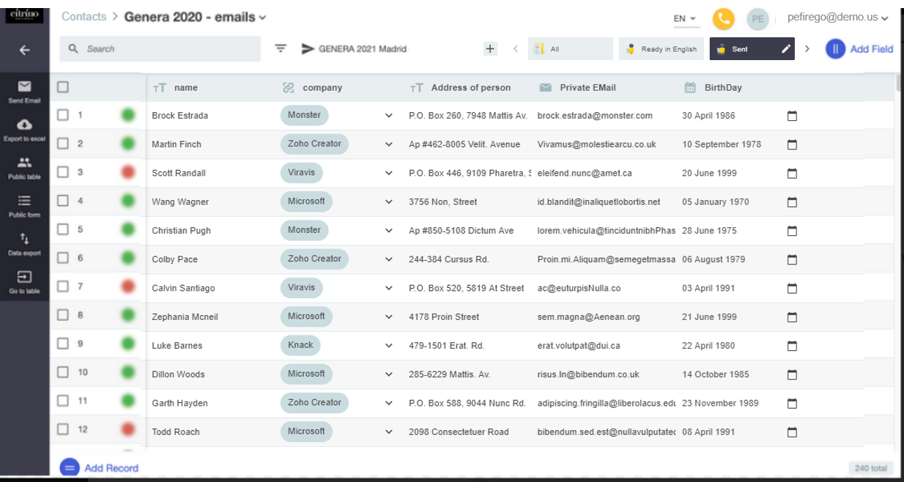
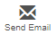
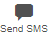

Guide to FrameLink
Send Emails & SMS
Transform your old spreadsheet into a live database ready to send Emails and SMS.
If you haven't done it yet -> Import your spreadsheet.
You can easily create extra fields, change names and more, according to your needs.Select recipients and Setup your template.
Select recipients and create a template based on an existing Email/SMS. Replace name or any elements you need to personalize by merge-tags and a template is ready to be used next time with any set of recipients.RESULT :
Each of your recipients will receive a personalized email thinking that you had written it.CHECK who received the Email, when was it opened and if any inside button was clicked :
For each recipient you will readily sees the overall results. Click each color on each line to see all details for a specific recipient.

Creating and using Email Templates
Whenever an Email collection is available, Framelink will show the Email Services icon  in the left vertical blackbar. Before sending the personalized emails, you must create a template - a generic text content with smart-tags or fields to be replaced by Framelink values - for each collection of Email messages. Follow these steps:
- - Select the collection you want to use to send your Emails by clicking and selecting the collection (one of the items that have a Star) you want to use.
- - Create a new template for that collection or edit an existing template. You can create any number of templates for each Email collection. Give a good name to your template. Later on this will be the name to select to resend Emails of that type.
- - While creating or editing your Email template notice that:
- You can personalize the Subject line, using "@" to include any of the FrameLink available fields for that template.
- From Email must always have an existing email. If the email in From Email is the same as any of the recipient Emails, FrameLink will assume it as an error (you dont want to send an Email to yourself. If you want to do a test use the test button).
- To use Email signatures you must define them upfront in "Settings-> Edit Email Settings". If at least one signature is defined, a pulldown will appear in the Template screen. By clicking the Signature pulldown (in blue bar above the Email body text) you will have access to all defined signatures.
- - Use Search or FrameLink Filters to select the set of recipients that you want to send your emails to. You can fine tunning the selection by enabling or disabling individual records (use the check box at the leftmost row side).
- - Select the Email collection you want to use to send your Emails by clicking and select the template name you want to use (one of the items without "star" that are below the chosen collection).
- - Do any last minute change you may need in your template, then click the blue "Save and Send" button.
Creating and Using SMS Templates
Whenever a possible Phone collection is availble, Framelink will show the SMS Services icon  below the table name. Before sending the personalized SMS, you must create a template for each family of SMS messages. Follow these steps:
- - Select the message you want to use to send your SMS by clicking and choosing the phone collection (one of the items that have a Star) you want to use.
- - Create a new template for that channel or edit an existing template. (You can create any number of templates for each SMS collection). Give a good name to your template. Later you will use that template name to resend SMS messages of that type.
-
- Notice the Sender Field: This content will may appear in the recipient Phone in diferent formats:
- - If it is a phone number: if the phone name exists in the recipient contact list, the recipient phone will replace the number by the contact name related to that number in the contact list. If the number is not in the contact list, the phone number will appear exactly as it is in the Sender Field.
- - If it is an alphanumeric: the text may appear exactly as it is in the Sender Field or a standard text may appear instead. This depends on the communications network of the recipient phone.
- - Remember that the recipient phone may check any number sequence with the recipient phone contact list. If a match is found the number will be replaced by the contact phone existing in the contact list.
- - Depending on the recipient device, URLs that may exist in the SMS body will be converted to a clickable icon in the recipient device or presented as an URL.
- - Use FrameLink Filters to select the set of records that you want to use for your SMS emission. You can fine tunning the selection by enabling or disabling individual records (use the check box at the leftmost row side).
- - Select the Phone collection you want to use to send you SMS by clicking and select the template name you want to use (one of the items without "star" that are below the chosen channel).
- - Do any last minute change you may need in your template, then click the blue "Save and Send" button.